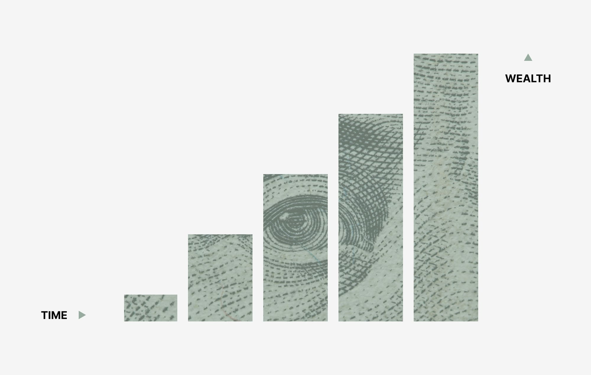

Best AI Tools for Personal Finance in 2026 (That Actually Save You Money)
Discover the best AI tools for personal finance in 2026. From budgeting apps to investment trackers, these tools help millennials save more and stress
Z Zar · 16 Apr 2026 · 3 min read

Part of our Complete Investing Guide
Managing money used to mean spreadsheets, guesswork, and a lot of anxiety. In 2026, AI has changed everything. The right AI tools can now track your spending, optimize your investments, and even predict your financial future, automatically.
I tested dozens of apps so you don't have to. Here are the best AI tools for personal finance in 2026.
1. Copilot Money
Copilot uses AI to categorize every transaction automatically and shows you exactly where your money goes each month. Unlike basic budgeting apps, it learns your habits over time and gets smarter the longer you use it.
Best for: Millennials who want a complete picture of their finances without manual entry. Price: $13/month Why it stands out: The AI budget forecasting shows how your current habits affect your future wealth, not just your current balance.
2. Monarch Money
Monarch is the most complete AI-powered financial dashboard available in 2026. It connects all your accounts (checking, savings, investments, loans) and gives you a real-time net worth tracker.
Best for: Couples and individuals who want everything in one place. Price: $14.99/month Why it stands out: The collaborative features let partners manage money together without arguments. The AI spending insights are genuinely useful, not just pretty charts.
3. Tiller Money
If you love spreadsheets but hate updating them manually, Tiller is for you. It automatically pulls your transactions into Google Sheets or Excel every day, with AI-powered categorization built in.
Best for: Detail-oriented people who want full control but zero manual work. Price: $79/year Why it stands out: Total transparency. You own your data, your formulas, your system. No black box.
4. Cleo
Cleo is the AI financial assistant that actually talks back. You chat with it like a friend: ask how much you spent on food last month, request a savings challenge, or get roasted for overspending (yes, really).
Best for: Gen Z and younger Millennials who find traditional finance apps boring. Price: Free (Cleo Plus at $5.99/month) Why it stands out: The conversational AI interface makes budgeting feel less like a chore and more like a game.
5. Wealthfront
Wealthfront's AI-powered investment engine automatically builds and rebalances a diversified portfolio based on your goals, risk tolerance, and timeline. It also does tax-loss harvesting automatically, something that used to cost thousands in financial advisor fees.
Best for: Passive investors who want their money working without constant attention. Price: 0.25% annual fee Why it stands out: The Path planning tool shows exactly what you need to do today to hit your retirement, home purchase, or college savings goals.
6. YNAB (You Need A Budget)
YNAB uses AI to analyze your spending patterns and help you assign every dollar a job before you spend it. It is one of the most effective tools for breaking the paycheck-to-paycheck cycle.
Best for: People with irregular income or those trying to get out of debt fast. Price: $109/year Why it stands out: Users report saving an average of $600 in their first two months. The AI-powered insights show exactly which habits are costing you the most.
How to Choose the Right AI Finance Tool for You
Not every tool is right for every person. Here is a quick guide:
- You want to track spending automatically → Copilot or Monarch Money
- You want to invest passively → Wealthfront or Betterment
- You want to get out of debt → YNAB
- You want something fun and conversational → Cleo
- You love spreadsheets → Tiller
The Bottom Line
AI has removed every excuse for not managing your money well. The tools above do the heavy lifting: all you need to do is connect your accounts and pay attention to what they tell you.
Start with one. Master it. Then add more as your financial life grows more complex.
The best AI finance tool is the one you actually use. Pick one today.
Free download: The 10-Step Financial Independence Checklist
The exact roadmap I followed to build my financial foundation. 6 pages, professionally designed, free, no email required.
The Knowledge Behind the AI Tools
The Psychology of Money
by Morgan Housel
AI tools help with the math. This book helps with the psychology, which is ultimately what determines whether any financial tool actually changes your behavior.